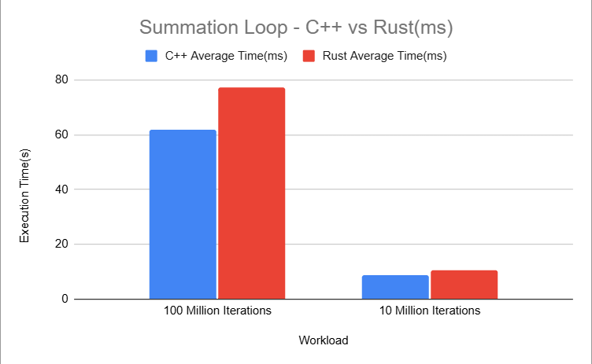
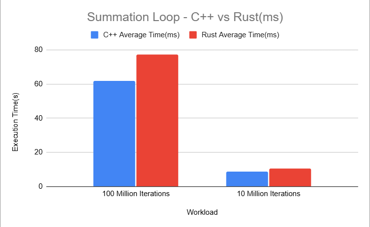
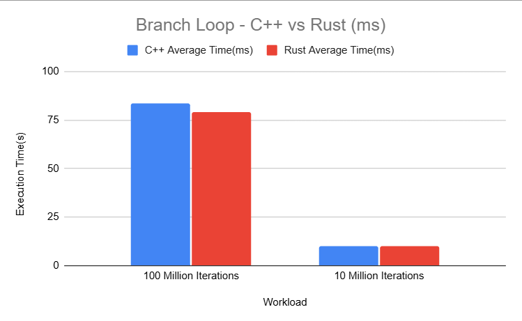
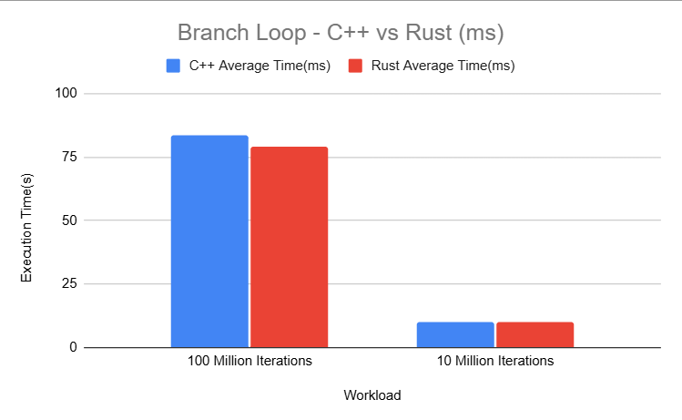
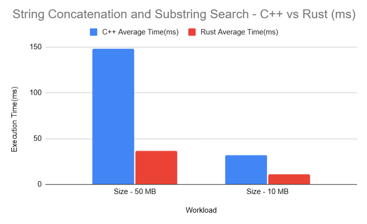
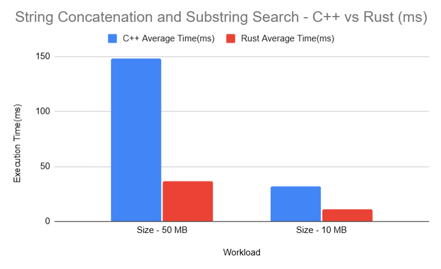

Overview
This project presents a systematic and reproducible performance comparison between C++ and Rust across a set of carefully designed benchmarks commonly used to evaluate system-level programming languages.
The objective is not to declare a universal “winner”, but to analyze execution performance, scalability, and runtime behavior under different workload characteristics using a consistent benchmarking methodology.
Each benchmark was executed multiple times, with average execution time and standard deviation recorded to capture both performance and run-to-run stability.
Benchmarks Implemented
The benchmarks progress from CPU-bound workloads to I/O-, string-, and memory-intensive operations:
- Summation Loop – Raw arithmetic and loop execution speed
- Branch-Heavy Loop – Branch prediction and control flow behavior
- Recursion Benchmark – Function call overhead and stack usage
- File Read – Sequential disk read throughput
- File Write – Sequential disk write performance
- String Parsing – Character-by-character parsing efficiency
- String Concatenation & Substring Search – Complex string manipulation
- Dynamic Allocation and Free – Heap allocation scalability
- Vector Insertion and Deletion – Dynamic container performance
Benchmarking Methodology
- Identical algorithms and workloads in both languages
- Optimized builds (`-O3` for C++, `rustc -O` for Rust)
- Multiple runs per benchmark (typically five)
- Average time and standard deviation recorded
- Same machine, OS, and runtime environment
Large Workloads and Chunking
Extremely large workloads (hundreds of millions or billions of operations) cannot always be executed in a single allocation due to physical memory limits. In such cases, workloads were executed in fixed-size chunks while preserving the total operation count.
This maintains algorithmic equivalence while enabling realistic, scalable benchmarking.
Benchmark Results
Each benchmark includes visual comparisons for both large-scale and small-scale workloads.
1. Summation Loop
Measures raw arithmetic throughput and compiler optimization efficiency.
 

- C++ performs better at mid-range workloads
- Performance converges at extreme scales
2. Branch-Heavy Loop
Evaluates branch prediction and control-flow behavior.
 

- Rust outperforms C++ for large branch-heavy workloads
- Differences narrow at smaller scales
3. Fibonacci Recursion
Measures recursive function call overhead and stack management.


- Rust scales better for deep recursion
- C++ performs better at mid-range depths
4. File Read
Evaluates sequential disk read throughput.


- Rust faster for large files
- C++ faster for small files
5. File Write
Measures sequential disk write performance.


- Rust excels at medium-sized writes
- Differences shrink at small sizes
6. String Parsing
Evaluates large-scale text parsing workloads.

- Rust significantly faster at large inputs
- Advantage persists across scales
7. String Concatenation & Substring Search
Measures complex string growth and search operations.
 

- Rust consistently outperforms C++
- Performance gap widens with size
8. Dynamic Allocation and Free
Evaluates allocator scalability under heavy allocation pressure.


- Rust scales better for large allocation counts
- Performance converges at small counts
9. Vector Insertion and Deletion
Measures dynamic container performance.


- Rust better for very large workloads
- C++ marginally faster for small workloads
Benchmark Data
All benchmark measurements are published below for transparency and reproducibility. Summary results are shown first, followed by the complete raw dataset.
Summary Results
Raw Benchmark Data
System Configuration
- CPU: Intel Core i5-1235U
- RAM: 8 GB
- OS: Windows 11 (24H2)
Limitations
- Single-machine benchmarking
- Results may vary across hardware and OS
- No multithreaded benchmarks included
Future Enhancements
- Multithreaded benchmarks
- Memory pressure scenarios
- Additional language comparisons (Go, Zig)
- Automated benchmark pipelines
Repository
Source code, raw data, charts, and documentation:
github.com/ShaggyLenoo/language-bench